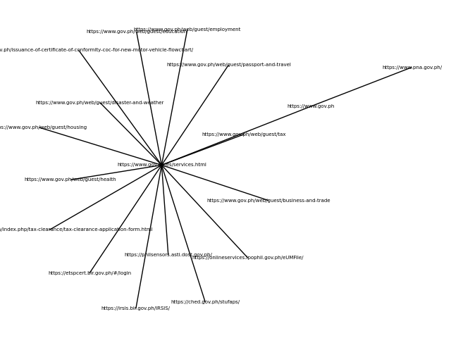
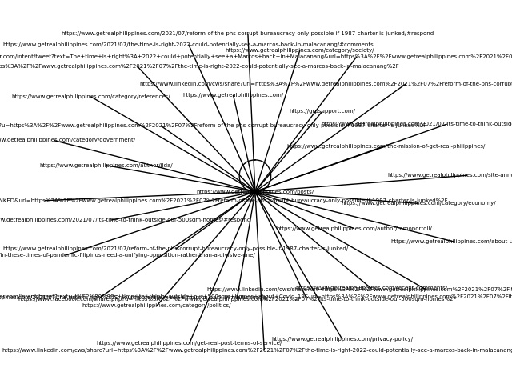
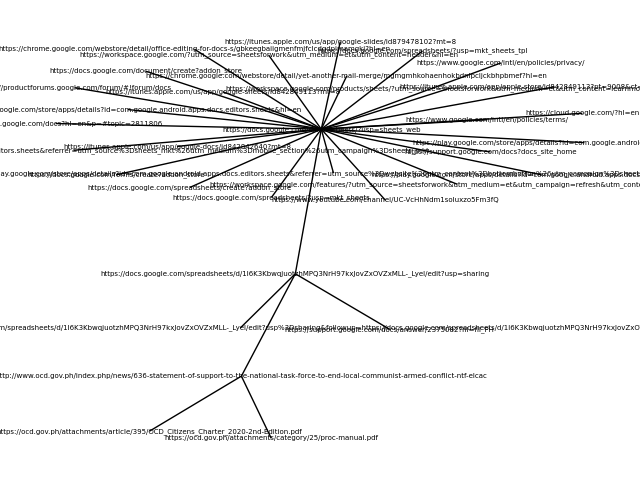
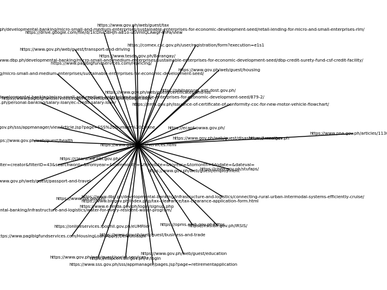
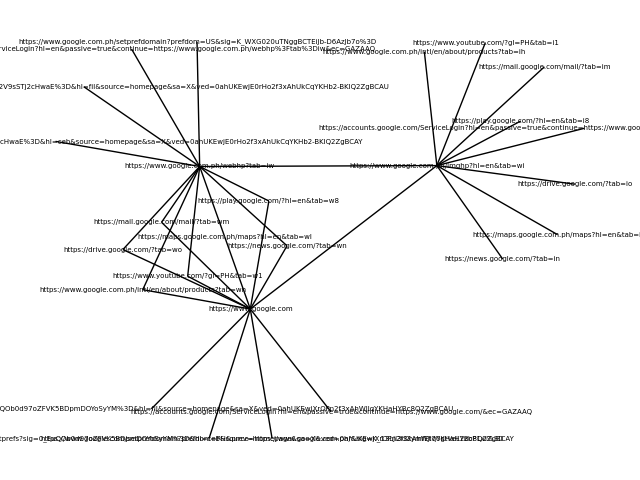

CONSTRUCTED MISDIRECTION
A project for Artists for Digital Rights Network
A software art piece that visualizes the descent into the rabbit hole of links being clicked due to disinformation. An exploration of disinformation as a form of censorship.










Instructions on using the software (for Windows users)
- Download Python through this link.
- Download the program through this link. Click "Code" then "Download ZIP". Extract the file afterwards.
- Download PyCharm Professional Edition through this link. We will be making use of the free trial.
- Using PyCharm, open the extracted folder. Right-click "app.py" and run it.